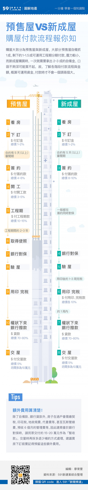

預售屋買賣流程、有什麼注意事項和陷阱! 撿便宜和不被騙必看的總整理!

預售屋在房地產中真的是個很特別的商品，因為購買金額超大，但是有時可看到的東西又超少;單憑幾張平面圖或3D 圖就要做幾百甚至於幾千萬的決定了。前幾年在房地產景氣大好時，常常還沒到成屋,甚至潛銷時就賣光的預售案件真的是屢見不鮮，所以真的想要看到成屋才決定買的，那還真的是會買不到房子。這也難怪預售屋在這幾年會這麼夯。

一.預售屋接待中心賞屋 一般建商賣預售屋都會蓋預售屋的接待中心，前去預售屋接待中心賞屋，若有喜歡的戶別，可先初步議價，付一小筆訂金(一般是十萬)，請建商保留下來資格，此時代銷或是建商會開立一張紅色預訂單;這就是之前很多投資客所謂的紅單。之前景氣好時，一張紅單一轉手就是賺個好幾十萬，不過後來為了抑制這種炒房歪風，建商也禁止這種紅單轉讓了。 二.預售屋議價，繳交「訂、簽、開」頭期款 議價後，若價格滿意確定購買，補足正式訂金。將「預售屋買賣契約書」帶回家仔細審閱，一般審閱期約5天~30天。確定契約沒有問題(一般是制式合約格式，要注意交屋日期與建材配備)，即可正式簽約，簽約時必須繳交簽約金,一般訂金+簽約金為房屋總價 8%。後續還有開工款一般為7%。訂金、簽約金、開工款，稱為「訂、簽、開」金，也就是預售屋的頭期款，通常約為房屋總價的15%。
繳交頭期款後，必須於預售屋的施工期間按期繳納工程款，金額約為房屋總價的10%~15%。 一般建商收款方式分為兩種：按工程期繳納：指依照工程進度，分期繳納工程款。若是工程零付款，代表工程款不用於施工期間繳納，而是等到結構體完成(一般是落鷹架)、領取使用執照或「交屋」時一併繳交 按月繳納：開工之後，無論施工進度如何，皆須按月繳納工程款。簽約前一定要弄清楚建商的規定 預售屋施工期間，建商會指定一段期間來進行預售屋的變更設計，可以請建商按照你的需求，變更室內隔局與水電建材等變更，省去日後要改變室內設計的裝修成本，一般而言預售屋客變次數通常以1次為限。 例如: 可改變插座、電源開關、電話線、網路線的配置;改變格局或是更換廚具、衛浴設備等。但若要改變污水管線，以不影響下個樓層為原則，但主結構、大樓外觀、公設設施等，都是無法做設計變更的。 很多人買預售屋，都有「客變」的經驗，就是在結構體完成後，建商可以提供住戶變更設計的服務，通常建商附贈的部分，包括天花板、牆面，以及衛浴、廚房，都是基本配備，但過去常常有人退掉這些贈品，以為起碼可以退回個十多萬，拿來貼補裝潢剛剛好，不過，細問之下才發現，雖然客變給了買屋客裝潢與設計的彈性，但建設公司通常「退料不退工」，住戶另外找工班重做自己喜歡的設計，除了退回的材料費，還得自付一筆工班的費用，前前後後，等於虧了兩次工錢，超不划算！ 近年的預售建案公設佔比，大多佔了三成以上，住戶花大錢買的公設，卻經常忘了點交，或者因為住戶管委會並非專業人士，很容易讓建商呼弄過去，最後游泳池變蓄水池、健身房變蚊子館，甚至建商根本不按圖施工，形成違建，讓住戶自行處理買單，尤其是射後不理的一案建商，之後再也找不到人，大家只能自認倒楣，切記！遇到這類狀況，千萬不能點交，必須請建商限期改善，也可以委請律師寄存證信函給建商，施予壓力，避免一拖好幾年！
建商領到使用執照後，會請你到銀行對保，由銀行審核你的貸款資格。對保過程，一定要確認貸款種類、貸款利率、攤還方式等細節。在對保同時，通常建商會請你簽下「撥款同意書」，也就是過戶時建商就可領取到銀行的撥款而不需經過你的同意;這是要保障建商當房子的所有權過到你名下時，建商就可拿到剩餘貸款。 對保之後，銀行會審核房屋的價值、個人信用狀況，決定是否有房屋貸款的資格，及實際的貸款成數 地價稅、房屋稅，在交屋日前由建商負擔，交屋日之後由買方負擔土地增值稅。建商負擔印花稅，買方負擔契稅及相關規費 一般是由建商委託的代書，辦理房地產過戶手續，需於建商領得使用執照後4個月內完成。 買預售屋最後一個步驟就是驗收交屋，驗收後若發現瑕疵，可於驗收單上請建商限期改善，並扣下交屋尾款。交屋保留款須於簽約時設定，一般為房屋總價的1%，待建商修繕完成後，才給付尾款
最好保留當初廣告宣傳的 DM、合約書，一樣一樣的核對，包含住家地板使用的磁磚、建材、該附贈的家電設備、衛浴品牌等；點交時，也要注意房屋所有人、身份證字號、地址等是否無誤，若有任何失誤，一定要馬上更正，否則別輕易簽下遷入證明，按照手上有的資料與正名，過程切記要挑三撿四，不厭其煩，這才是保障自己權益最好的方法。 按部就班點交之後，接下來，一定要先確認有無「使用執照」，並檢查執照是否就是自己購買房屋的使用執照！按照法令規範，一定要拿到使用執照的建案，才算法律定義的「成屋」，因此消費者就算看到建物都已經完工，眼見為憑也不能完全算數，必須請銷售人員出示使用執照；最好還要自行調閱土地謄本及建物謄本等相關文件，清楚核對產權登記及房屋面積，買房這等大事，千萬不要太過相信建商，多做一道功，有機會少一分損失！
一般來說，購買預售屋時，通常只有設計圖與樣品屋供參考，所以交屋時，一定要注意實際坪數是否正確，建議申請「建物測量成果圖」，注意登記坪數是否於誤差範圍 1％ 以內；最好再向地政事務所調閱土地與建物謄本，以核對產權是否登記無誤。 畢竟，預售屋不像成屋，所有的屋況都看得到、摸得著，交屋時，經常會出現屋況與預期有所落差，除非交屋的過程讓你非常滿意，幾乎沒有瑕疵，否則絕對不要輕易買單，如果建商違約情節重大，且不知悔改，可以用存證信函，通知銀行「撤銷付款委託」，而這個自救最佳時機，只有「產權過戶」後，到「貸款核撥」前短短的兩到三天時間，一定要把握。 萬一建商延遲交屋，根據預售屋買賣契約規定，如果建商延遲三個月交屋，消費者可主張解約，並要求賠償付款金額一成五的違約金！過去，曾經發生過建商延遲交屋，而透過建商與金融行庫談房貸合作專案，專案時間到期執行，銀行趕著提前撥款，結果變成建商還沒交屋，錢就已經收足，這對購屋人來說真的太可怕了，提醒大家，與銀行對保核貸文件要特別注意，不要輕易在有空白金額的契約簽字，並詳閱文件上核貸金額及核撥授權規定，以免房子沒點交，卻已經白白揹了房貸！